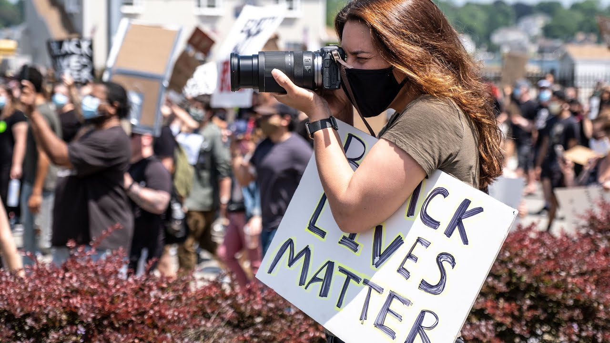

Know Your Rights:
Demonstrations & Police Encounters
Eric M. Fink
Elon Law School
Disclaimer
This is a general overview of issues that may arise in political demonstrations and police encounters. The information presented is not offered or intended as legal advice.
Freedom of Speech & Assembly
1st Amendment
Congress shall make no law … abridging the freedom of speech … or the right of the people peaceably to assemble, and to petition the Government for a redress of grievances.
1st Amendment: Scope
The 1st Amendment protects against restraints on speech and assembly by government action.
1st Amendment: Effect
Government may not prohibit, restrain, limit, or punish protected 1st Amendment speech or assembly based on the content or subject of the expression, the viewpoint expressed, or the political affiliation or association of the speaker/participants.
Speech
Protected speech includes both verbal and non-verbal expression.
Body Language

Clothing

Conduct
1st Amendment: Permissible Regulation
Government may regulate the time, place, and manner of speech or assembly.
Time, Place, & Manner Regulations
Examples:
- Permits for use of certain public places
- Noise ordinances & regulations of sound equipment
- Restrictions on posting signs or flyers
- Prohibitions against blocking pedestrians or traffic
Time, Place, & Manner Regulations
Courts apply three criteria in assessing the validity of time, place, or manner restrictions:
- They must be content-neutral, both facially and as applied.
- They must be narrowly-tailored to protect a substantial government interest.
- They must leave open alternative channels of communication to reach the intended audience.
Public Forum
1st Amendment protections are strongest in places traditionally open to unrestricted public speech & activity.
Public Forum: Examples
- Sidewalks
- Parks
- Plazas outside government buildings
Public Forum: Protected Activity
These activities are generally permitted in a public forum (subject to reasonable time, place, & manner regulation):
- Peaceful demonstrations
- Permits may be required for sound amplification.
- Permits may be required for demonstrations in certain public spaces, such as parks.
- Signs, banners
- There may be restrictions on poles or other material that could pose a danger.
- Distribution of literature
- Posting leaflets on walls, lightposts, etc. may be prohibited.
Public Forum: Unprotected Activity
These activities may be restricted or prohibited, and may result in arrest:
- Blocking sidewalks
- Blocking entry to and exit from buildings and public access areas
- Demonstrating or marching in the street without a permit
- Blocking traffic
1st Amendment & the Police
Interacting with Police
It is generally a good idea to have someone designated to communicate with the police in the event they attempt to restrict 1st Amendment activity, or threaten/carry out arrests, during a demonstration.
- You may ask the police to explain any restrictions on the activity.
- You may ask the police why participants have been arrested and where they will be taken following arrest.
Interacting with Police
Even if the police do not provide satisfactory answers, or you believe they are infringing on your 1st Amendment rights, arguing with them is typically futile and may lead to being charged with resisting arrest or other criminal offenses.
Photographs & Audio-Video Recordings

Photos & Video Images
A person who is lawfully present in a public place may photograph or make video recordings of anything and any person in plain view.
- This includes law enforcement personnel and equipment
Permission of Those Photographed or Recorded
- Permission of the person being photographed or recorded is not required.
- Many people do not understand this and may object that photographing or recording them without their permission is a violation of their privacy or other legal rights.
- It is unlawful for any person to use physical force to stop you from taking photographs or recordings in a public place.
- But be aware that photographs and recordings may be used as evidence against demonstrators in criminal or civil cases.
Audio Recordings
In North Carolina, audio recordings of private conversations only require the consent of one party to the conversation.
- This may apply to conversations in public places, if there is a reasonable expectation of privacy.
- If the person making the audio recording is a party to the conversation, their consent is sufficient.
- Audio recordings of conversations with the police acting in their official capacity are not private and do not require permission.
Photographs & Recordings on Private Property
The owner of private property may prohibit or restrict photography and recording on the property.
- But a property owner may not prohibit you from taking photographs or recordings of the property from a public place.
Police Interference with Photography & Recording
The police may not lawfully prohibit you from, or arrest you for, taking photographs or recordings in a public place.
The police may not lawfully seize your equipment, demand to view your photographs or recordings, or delete your photographs or recordings without a warrant.
The police may lawfully order you to cease activity, including photography or video recording, if it is interfering with an arrest or other legitimate law enforcement activity.
Police Encounters & Arrests
Police Questioning
In general, a police officer may lawfully ask you questions at any time, without having to demonstrate reasonable suspicion or probable cause.
If you speak to a law enforcement officer, your statements may be used against you and others.
It is a criminal offense to provide false information to a police officer.
Constitutional Rights When Questioned by Police
You have a right to refuse to answer police questions, and the right to consult with a lawyer before agreeing to speak to the police. These rights apply whether or not you have been detained or arrested.
- But the police are not required to inform you of these rights unless they intend to conduct a custodial interrogation (i.e. question you while under arrest or otherwise not free to go).
Right to Remain Silent
You are not required to tell the police that you are exercising your right to remain silent.
- But it is usually a good idea to do so.
Right to Remain Silent
Even if you answer some questions, you may still stop and refuse to answer any further questions until you have a lawyer.
You may not lawfully be arrested or punished for failing or refusing to answer police questions.
Right to Counsel
Police officers may try to pressure or persuade you to speak to them without a consulting a lawyer.
Bear in mind that the police are legally permitted to lie to you.
Common Police Tactics
- They may say that you are better off without a lawyer.
- This is almost never true.
- They may threaten you with a grand jury subpoena.
- They may be bluffing and even if they’re not, you are entitled to consult with a lawyer before testifying.
- They may promise leniency in criminal charges or sentencing.
- Criminal charges and plea bargains are up to the prosecutor, not the police.
Police Stops & Detention
If you are stopped by a police officer, you are legally entitled to walk away unless you have been detained or arrested. If you’re unsure, you can ask if you are free to go.
- It is generally a good idea to walk away calmly.
- If you run, or otherwise act in a “furtive” “suspicious” manner, the officer might use that as a pretext to detain or arrest you.
- It is generally not a good idea to argue with or insult the officer.
- Even though your statements may be protected under the 1st Amendment, the officer is unlikely to be persuaded and is likely to react by detaining or arresting you.
Detention
Detention means that you have been stopped by a police officer and are not free to go.
- Detention may lead to an arrest, but it is not the same thing.
Detention: Constitutional Rights
If you are detained, your constitutional rights (including the right to remain silent) apply, but the police are not required to inform you of those rights unless you are arrested.
Pat-Downs
If you are detained, the officer may conduct a “pat down” (an external check) for weapons.
- Legally, a police officer is required to have “reasonable suspicion” that you are armed and dangerous before conducting a pat down.
- Police often cite “furtive” or “suspicious” movements or demeanor to justify a pat down.
Searches
If you are detained but not arrested, the officer may not lawfully conduct any search beyond a pat-down (e.g. inside your pockets, under your clothing, inside a bag or other item) without your consent or “probable cause”.
- You may tell a police officer you do not consent to a search.
- Refusal to consent is not probable cause for a search.
- If the officer proceeds (which is likely), you do not have a legal right to physically resist.
Probable Cause
Probable cause means that the officer has knowledge of facts sufficient to support a reasonable belief that you are engaged in criminal activity or have evidence of a crime in your possession.
Arrests
Arrests, like searches, require probable cause.
- Police officers will usually tell you if you are being placed under arrest.
- If you are unsure, you may ask.
- The officer will not necessarily inform you of the charges at the time of arrest.
Resisting Arrest
Resisting arrest is a crime, even if the arrest itself is unlawful or the police use excessive force in carrying out the arrest.
Search Incident to Arrest
Once you have been placed under arrest, the police may lawfully conduct a search:
- Inside your clothing and any objects you are holding or carrying.
- The area within your immediate control.
Miranda Warning
If you are arrested, the police may not lawfully interrogate you without advising you of your right to refuse to answer questions and your right to legal representation.
- The police may recite the Miranda warning at the time of arrest or at a later time prior to any interrogation.
Rights Following Arrest
Phone Call
You have the right to make a phone call within a reasonable time after being arrested.
- The police may not listen to your calls with your lawyer.
- But they may (and mostly likely will) listen to any other calls.
Court Appearance
You have the right to appear before a judge or magistrate within a reasonable time after being arrested (usually within 48 hours).
- The purpose of this appearance is to hear the formal charges against you, decide on bail, and enter a plea.
- You have a right to be represented by a lawyer at this and all other court appearances.
- If you can’t afford a lawyer, you have a right to be represented at no cost by a public defender or other court-appointed lawyer.